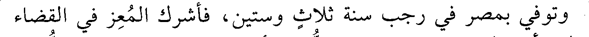
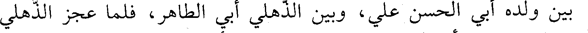
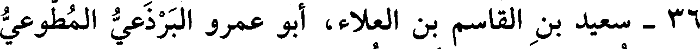
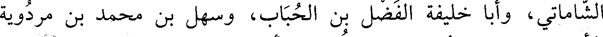
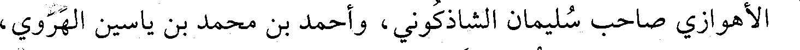
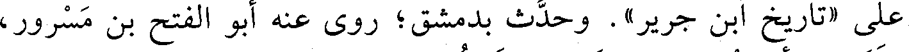
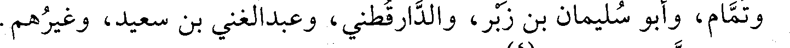
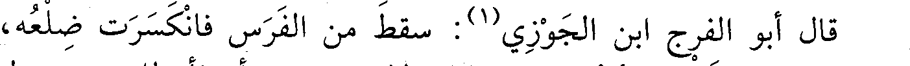

File: 000720.gt.txt (if the image is defective, simply delete all Arabic text and the line will be excluded)

وتوفي بمصر في رجب سنة ثلاث وستين، فأشرك المعز في القضاء
File: 000721.gt.txt (if the image is defective, simply delete all Arabic text and the line will be excluded)

بين ولده أبي الحسن علي، وبين الذهلي أبي الطاهر، فلما عجز الذهلي
File: 000722.gt.txt (if the image is defective, simply delete all Arabic text and the line will be excluded)
وشاخ، استقل أبو الحسن بالقضاء، واستناب أخاه عبدالله.
File: 000723.gt.txt (if the image is defective, simply delete all Arabic text and the line will be excluded)
وكان أبو الحسن شاعرا محسنا.
File: 000724.gt.txt (if the image is defective, simply delete all Arabic text and the line will be excluded)
221
File: 000725.gt.txt (if the image is defective, simply delete all Arabic text and the line will be excluded)
وستين(1) .
File: 000726.gt.txt (if the image is defective, simply delete all Arabic text and the line will be excluded)

36 - سعيد بن القاسم بن العلاء، أبو عمرو البرذعي المطوعي
File: 000727.gt.txt (if the image is defective, simply delete all Arabic text and the line will be excluded)
المرابط، نزيل مدينة طراز من أول الترك.
File: 000728.gt.txt (if the image is defective, simply delete all Arabic text and the line will be excluded)
سمع محمد بن حبان بن الأزهر الباهلي، وعبدالله بن الحسين
File: 000729.gt.txt (if the image is defective, simply delete all Arabic text and the line will be excluded)

الشاماتي، وأبا خليفة الفضل بن الحباب، وسهل بن محمد بن مردويه
File: 000730.gt.txt (if the image is defective, simply delete all Arabic text and the line will be excluded)

الأهوازي صاحب سليمان الشاذكوني، وأحمد بن محمد بن ياسين الهروي،
File: 000731.gt.txt (if the image is defective, simply delete all Arabic text and the line will be excluded)
ومحمد بن يحيى بن منده، وعبدان.
File: 000732.gt.txt (if the image is defective, simply delete all Arabic text and the line will be excluded)
روى عنه محمد بن إسماعيل الوراق، والدارقطني، وأبو علي بن
File: 000733.gt.txt (if the image is defective, simply delete all Arabic text and the line will be excluded)
فضالة الرازي شيخ الخطيب، وأبو بكر أحمد بن عبدالرحمن الشيرازي،
File: 000734.gt.txt (if the image is defective, simply delete all Arabic text and the line will be excluded)
وأبو عبدالله الحاكم، وقال: توفي غازيا بأسبيجاب(2) .
File: 000735.gt.txt (if the image is defective, simply delete all Arabic text and the line will be excluded)
37- عبدالله(3) بن أحمد بن جعفر بن خذيان، أبو محمد
File: 000736.gt.txt (if the image is defective, simply delete all Arabic text and the line will be excluded)
الفرغاني الجندي.
File: 000737.gt.txt (if the image is defective, simply delete all Arabic text and the line will be excluded)
سمع محمد بن جرير الطبري، وعلي بن الحسن بن سليمان. وذيل
File: 000738.gt.txt (if the image is defective, simply delete all Arabic text and the line will be excluded)

على «تاريخ ابن جرير» . وحدث بدمشق؛ روى عنه أبو الفتح بن مسرور،
File: 000739.gt.txt (if the image is defective, simply delete all Arabic text and the line will be excluded)

وتمام، وأبو سليمان بن زبر، والدارقطني، وعبدالغني بن سعيد، وغيرهم.
File: 000740.gt.txt (if the image is defective, simply delete all Arabic text and the line will be excluded)
وثقه ابن مسرور(4) .
File: 000741.gt.txt (if the image is defective, simply delete all Arabic text and the line will be excluded)
بل توفي سنة اثنتين وستين في جمادى الأولى؛ ورخه ابن الطحان.
File: 000742.gt.txt (if the image is defective, simply delete all Arabic text and the line will be excluded)
38 - عبدالله بن محمد بن عمر بن عبد الله بن الحسن الهمداني
File: 000743.gt.txt (if the image is defective, simply delete all Arabic text and the line will be excluded)
الذكواني، أبو محمد الأصبهاني القاضي.
File: 000744.gt.txt (if the image is defective, simply delete all Arabic text and the line will be excluded)
سمع عبدان بن أحمد، وحاجب بن أركين الفرغاني، وجعفر بن
File: 000745.gt.txt (if the image is defective, simply delete all Arabic text and the line will be excluded)
خلع عليه الطائع لله وطوقه وسوره ولقبه «نصر الدولة»، فلم تطل
File: 000746.gt.txt (if the image is defective, simply delete all Arabic text and the line will be excluded)
أيامه.
File: 000747.gt.txt (if the image is defective, simply delete all Arabic text and the line will be excluded)

قال أبو الفرج ابن الجوزي(1) : سقط من الفرس فانكسرت ضلعه،
File: 000748.gt.txt (if the image is defective, simply delete all Arabic text and the line will be excluded)
فاستدعي ابن الصلت المجبر فرد ضلعه ولازمه حتى برا، فأعطاه يوم دخوله
File: 000749.gt.txt (if the image is defective, simply delete all Arabic text and the line will be excluded)
الحمام ألف دينار وفرسا وخلعة، وبقي لا يمكنه الانحناء للركوع، وكان
To Save: `Ctrl+s`, make sure to choose `Webpage, complete`!